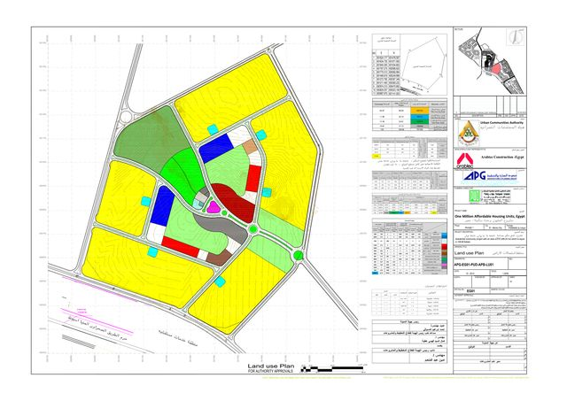

Private Villa, Cairo-Suez Road
Housing development · Cairo-Suez Road, Egypt
Private villa on the Cairo-Suez road, with working drawings issued in April 2005.
Partners
PUD
Client
More from Cairo-Suez Road
 Heliopark Concept MasterplanNew Cairo · 2021
Heliopark Concept MasterplanNew Cairo · 2021
One Million Affordable Housing Units: Minya Land-Use PlanMinya · 2014 The Royal OasisSheikh Zayed City · 20012011Regional Vision for the North Coast and Tourism Development Master Plan for Fuka-MatrouhFuka-Matrouh sub-region, North Coast · 2011
The Royal OasisSheikh Zayed City · 20012011Regional Vision for the North Coast and Tourism Development Master Plan for Fuka-MatrouhFuka-Matrouh sub-region, North Coast · 2011 Private Waterfront Property in HurghadaHurghada · 2011
Private Waterfront Property in HurghadaHurghada · 2011 Urban Renewal of the Faculty of Agriculture, Cairo UniversityGiza (Cairo University) · 2010
Urban Renewal of the Faculty of Agriculture, Cairo UniversityGiza (Cairo University) · 2010